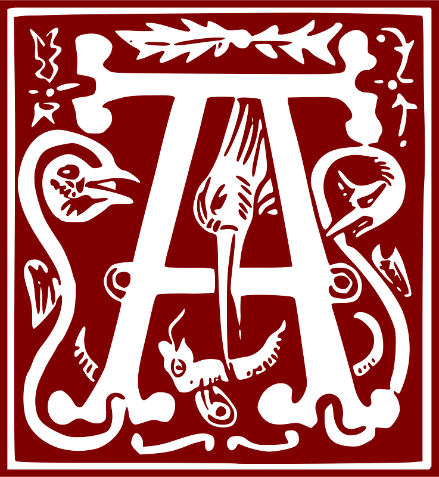

u commencement était le Verbe, et le Verbe était auprès de Dieu, et le Verbe était Dieu. Il était au commencement auprès de Dieu. C’est par lui que tout est venu à l’existence, et rien de ce qui s’est fait ne s’est fait sans lui. En lui était la vie, et la vie était la lumière des hommes ; la lumière brille dans les ténèbres, et les ténèbres ne l’ont pas arrêtée. Il y eut un homme envoyé par Dieu ; son nom était Jean. Il est venu comme témoin, pour rendre témoignage à la Lumière, afin que tous croient par lui. Cet homme n’était pas la Lumière, mais il était là pour rendre témoignage à la Lumière. Le Verbe était la vraie Lumière, qui éclaire tout homme